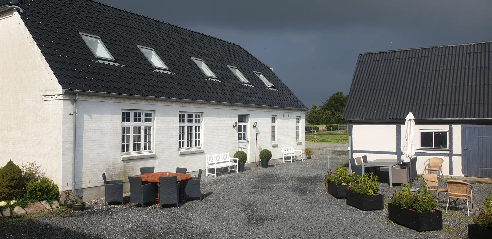

Roskilde
B&B
Bo i moderne faciliteter med fri vestvendt udsigt over marker og enge. Badesøer, strande, butikker og restauranter i Roskilde og Solrød ligger 10–15 minutters kørsel væk.
Lyse værelser med altan eller terrasse, hurtigt gratis wi-fi samt gratis te og kaffe. Fælles plads til at spise, arbejde og slappe af.

- Værelser
- Altan eller terrasse
- Ankomst
- 17.00–22.00
- Parkering
- Gratis
- Adresse
- Søgårdsvej 2